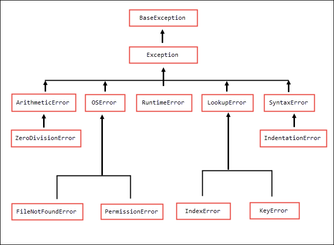

Exception Handling in Python
Last updated on September 22, 2020
Exception handling is a mechanism which allows us to handle errors gracefully while the program is running instead of abruptly ending the program execution.
Runtime Errors #
Runtime errors are the errors which happens while the program is running. Note is that runtime errors do not indicate there is a problem in the structure (or syntax) of the program. When runtime errors occurs Python interpreter perfectly understands your statement but it just can't execute it. However, Syntax Errors occurs due to incorrect structure of the program. Both type of errors halts the execution of the program as soon as they are encountered and displays an error message (or traceback) explaining the probable cause of the problem.
The following are some examples of runtime errors.
Example 1: Division by a zero.
1 2 3 4 5 6 | >>>
>>> 2/0
Traceback (most recent call last):
File "<stdin>", line 1, in <module>
ZeroDivisionError: division by zero
>>>
|
Example 2: Adding string to an integer.
1 2 3 4 5 6 | >>>
>>> 10 + "12"
Traceback (most recent call last):
File "<stdin>", line 1, in <module>
TypeError: unsupported operand type(s) for +: 'int' and 'str'
>>>
|
Example 3: Trying to access element at invalid index.
1 2 3 4 5 6 7 8 | >>>
>>> list1 = [11, 3, 99, 15]
>>>
>>> list1[10]
Traceback (most recent call last):
File "<stdin>", line 1, in <module>
IndexError: list index out of range
>>>
|
Example 4: Opening a file in read mode which doesn't exist.
1 2 3 4 5 6 7 | >>>
>>> f = open("filedoesntexists.txt", "r")
Traceback (most recent call last):
File "<stdin>", line 1, in <module>
FileNotFoundError: [Errno 2] No such file or directory: 'filedoesntexists.txt'
>>>
>>>
|
Again note that all the above statements are syntactically valid, the only problem is that when Python tries to execute them, they got into an invalid state.
An error which occur while the program is running is known as an exception. When this happens, we say Python has raised an exception or an exception is thrown. Whenever such errors happen, Python creates a special type of object which contains all the relevant information about the error just occurred. For example, it contains a line number at which the error occurred, error messages (remember it is called traceback) and so on. By default, these errors simply halts the execution of the program. Exception handling mechanism allows us to deal with such errors gracefully without halting the program.
try-except statement #
In Python, we use try-except statement for exception handling. Its syntax is as follows:
1 2 3 4 5 6 7 8 9 | try:
# try block
# write code that might raise an exception here
<statement_1>
<statement_2>
except ExceptiomType:
# except block
# handle exception here
<handler>
|
The code begins with the word try, which is a reserved keyword, followed by a colon (:). In the next line we have try block. The try block contains code that might raise an exception. After that, we have an except clause that starts with the word except, which is again a reserved keyword, followed by an exception type and a colon (:). In the next line, we have an except block. The except block contains code to handle the exception. As usual, code inside the try and except block must be properly indented, otherwise, you will get an error.
Here is how the try-except statement executes:
When an exception occurs in the try block, the execution of the rest of the statements in the try block is skipped. If the exception raised matches the exception type in the except clause, the corresponding handler is executed.
If the exception raised in the try block doesn't matches with the exception type specified in the except clause the program halts with a traceback.
On the other hand, If no exception is raised in the try block, the except clause is skipped.
Let's take an example:
python101/Chapter-19/exception_handling.py
1 2 3 4 5 6 7 8 | try:
num = int(input("Enter a number: "))
result = 10/num
print("Result: ", result)
except ZeroDivisionError:
print("Exception Handler for ZeroDivisionError")
print("We cant divide a number by 0")
|
Run the program and enter 0.
First run output:
1 2 3 | Enter a number: 0
Exception Handler for ZeroDivisionError
We cant divide a number by 0
|
In this example, the try block in line 3 raises a ZeroDivisionError. When an exception occurs Python looks for the except clause with the matching exception type. In this case, it finds one and runs the exception handler code in that block. Notice that because an exception is raised in line 3, the execution of reset of the statements in the try block is skipped.
Run the program again but this time enter a string instead of a number:
Second run output:
1 2 3 4 5 | Enter a number: str
Traceback (most recent call last):
File "exception_example.py", line 2, in <module>
num = int(input("Enter a number: "))
ValueError: invalid literal for int() with base 10: 'str'
|
This time our program crashes with the ValueError exception. The problem is that the built-in int() only works with strings that contain numbers only, if you pass a string containing non-numeric character it will throw a ValueError exception.
1 2 3 4 5 6 7 8 9 | >>>
>>> int("123") // that's fine because string only contains numbers
123
>>>
>>> int("str") // error can't converts characters to numbers
Traceback (most recent call last):
File "<stdin>", line 1, in <module>
ValueError: invalid literal for int() with base 10: 'str'
>>>
|
As we have don't have an except clause with the ValueError exception, our program crashes with ValueError exception.
Run the program again and this time enter an integer other than 0.
Third run output:
1 2 | Enter a number: 4
Result: 2.5
|
In this case, statements in the try block executes without throwing any exception, as a result, the except clause is skipped.
Handling Multiple Exceptions #
We can add as many except clause as we want to handle different types of exceptions. The general format of such a try-except statement is as follows:
1 2 3 4 5 6 7 8 9 10 11 12 13 14 15 16 17 18 19 20 | try:
# try block
# write code that might raise an exception here
<statement_1>
<statement_2>
except <ExceptiomType1>:
# except block
# handle ExceptiomType1 here
<handler>
except <ExceptiomType2>:
# except block
# handle ExceptiomType2 here
<handler>
except <ExceptiomType2>:
# except block
# handle ExceptiomType3 here
<handler>
except:
# handle any type of exception here
<handler>
|
Here is how it works:
When an exception occurs, Python matches the exception raised against every except clause sequentially. If a match is found then the handler in the corresponding except clause is executed and rest of the except clauses are skipped.
In case the exception raised doesn't matches any except clause before the last except clause (line 18), then the handler in the last except clause is executed. Note that the last except clause doesn't have any exception type in front of it, as a result, it can catch any type of exception. Of course, this last except clause is entirely optional but we commonly use it as a last resort to catch the unexpected errors and thus prevent the program from crashing.
The following program demonstrates how to use multiple except clauses.
python101/Chapter-19/handling_muliple_types_of_exceptions.py
1 2 3 4 5 6 7 8 9 10 11 12 13 14 15 16 17 | try:
num1 = int(input("Enter a num1: "))
num2 = int(input("Enter a num2: "))
result = num1 / num2
print("Result: ", result)
except ZeroDivisionError:
print("\nException Handler for ZeroDivisionError")
print("We cant divide a number by 0")
except ValueError:
print("\nException Handler for ValueError")
print("Invalid input: Only integers are allowed")
except:
print("\nSome unexpected error occurred")
|
First run output:
1 2 3 4 5 | Enter a num1: 10
Enter a num2: 0
Exception Handler for ZeroDivisionError
We cant divide a number by 0
|
Second run output:
1 2 3 4 5 | Enter a num1: 100
Enter a num2: a13
Exception Handler for ValueError
Invalid input: Only integers are allowed
|
Third run output:
1 2 3 | Enter a num1: 5000
Enter a num2: 2
Result: 2500
|
Here is another example program that asks the user to enter the filename and then prints the content of the file to the console.
python101/Chapter-19/exception_handling_while_reading_file.py
1 2 3 4 5 6 7 8 9 10 11 12 13 14 15 16 17 18 | filename = input("Enter file name: ")
try:
f = open(filename, "r")
for line in f:
print(line, end="")
f.close()
except FileNotFoundError:
print("File not found")
except PermissionError:
print("You don't have the permission to read the file")
except:
print("Unexpected error while reading the file")
|
Run the program and specify a file that doesn't exist.
First run output:
1 2 | Enter file name: file_doesnt_exists.md
File not found
|
Run the program again and this time specify a file that you don't have permission to read.
Second run output:
1 2 | Enter file name: /etc/passwd
You don't have the permission to read the file
|
Run the program once more but this time specify a file that does exist and you have the permission to read it.
Third run output:
1 2 3 4 5 6 | Enter file name: ../Chapter-18/readme.md
First Line
Second Line
Third Line
Fourth Line
Fifth Line
|
The else and finally clause #
A try-except statement can also have an optional else clause which only gets executed when no exception is raised. The general format of try-except statement with else clause is as follows:
1 2 3 4 5 6 7 8 9 10 11 12 | try:
<statement_1>
<statement_2>
except <ExceptiomType1>:
<handler>
except <ExceptiomType2>:
<handler>
else:
# else block only gets executed
# when no exception is raised in the try block
<statement>
<statement>
|
Here is a rewrite of the above program using the else clause.
python101/Chapter-19/else_clause_demo.py
1 2 3 4 5 6 7 8 9 10 11 12 13 14 15 16 17 18 19 20 21 22 23 24 25 | import os
filename = input("Enter file name: ")
try:
f = open(filename, "r")
for line in f:
print(line, end="")
f.close()
except FileNotFoundError:
print("File not found")
except PermissionError:
print("You don't have the permission to read the file")
except FileExistsError:
print("You don't have the permission to read the file")
except:
print("Unexpected error while reading the file")
else:
print("Program ran without any problem")
|
Run the program and enter a file that doesn't exist.
First run output:
1 2 | Enter file name: terraform.txt
File not found
|
Again run the program but this time enter a file that does exist and you have the permission to access it.
Second run output:
1 2 3 4 5 6 7 | Enter file name: ../Chapter-18/readme.md
First Line
Second Line
Third Line
Fourth Line
Fifth Line
Program ran without any problem
|
As expected, the statement in the else clause is executed this time. The else clause is usually used to write code which we want to run after the code in the try block ran successfully.
Similarly, we can have a finally clause after all except clauses. The statements under the finally clause will always execute irrespective of whether the exception is raised or not. It's general form is as follows:
1 2 3 4 5 6 7 8 9 10 11 12 | try:
<statement_1>
<statement_2>
except <ExceptiomType1>:
<handler>
except <ExceptiomType2>:
<handler>
finally:
# statements here will always
# execute no matter what
<statement>
<statement>
|
The finally clause is commonly used to define clean up actions that must be performed under any circumstance. If the try-except statement has an else clause then the finally clause must appear after it.
The following program shows the finally clause in action.
python101/Chapter-19/finally_clause_demo.py
1 2 3 4 5 6 7 8 9 10 11 12 13 14 15 16 17 18 19 20 21 22 23 24 25 26 27 28 | import os
filename = input("Enter file name: ")
try:
f = open(filename, "r")
for line in f:
print(line, end="")
f.close()
except FileNotFoundError:
print("File not found")
except PermissionError:
print("You don't have the permission to read the file")
except FileExistsError:
print("You don't have the permission to read the file")
except:
print("Unexpected error while reading the file")
else:
print("\nProgram ran without any problem")
finally:
print("finally clause: This will always execute")
|
First run output:
1 2 3 | Enter file name: little.txt
File not found
finally clause: This will always execute
|
Second run output:
1 2 3 4 5 6 7 8 | Enter file name: readme.md
First Line
Second Line
Third Line
Fourth Line
Fifth Line
Program ran without any problem
finally clause: This will always execute
|
Exceptions Propagation and Raising Exceptions #
In the earlier few sections, we have learned how to deal with exceptions using the try-except statement. In this section, we will discuss who throws an exception, how to create an exception and how they propagate.
An exception is simply an object raised by a function signaling that something unexpected has happened which the function itself can't handle. A function raises exception by creating an exception object from an appropriate class and then throws the exception to the calling code using the raise keyword as follows:
raise SomeExceptionClas("Error message describing cause of the error")
We can raise exceptions from our own functions by creating an instance of RuntimeError() as follows:
raise RuntimeError("Someting went very wrong")
When an exception is raised inside a function and is not caught there, it is automatically propagated to the calling function (and any function up in the stack), until it is caught by try-except statement in some calling function. If the exception reaches the main module and still not handled, the program terminates with an error message.
Let's take an example.
Suppose we are creating a function to calculate factorial of a number. As factorial is only valid for positive integers, passing data of any other type would render the function useless. We can prevent this by checking the type of argument and raising an exception if the argument is not a positive integer. Here is the complete code.
python101/Chapter-19/factorial.py
1 2 3 4 5 6 7 8 9 10 11 12 13 14 15 16 17 18 19 | def factorial(n):
if not isinstance(n, int):
raise RuntimeError("Argument must be int")
if n < 0:
raise RuntimeError("Argument must be >= 0")
f = 1
for i in range(n):
f *= n
n -= 1
return f
try:
print("Factorial of 4 is:", factorial(4))
print("Factorial of 12 is:", factorial("12"))
except RuntimeError:
print("Invalid Input")
|
Output:
1 2 | Factorial of 4 is: 24
Invalid Input
|
Notice that when the factorial() function is called with a string argument (line 17), a runtime exception is raised in line 3. As factorial() function is not handling the exception, the raised exception is propagated back to the main module where it is caught by the except clause in line 18.
Note that in the above example we have coded the try-except statement outside the factorial() function but we could have easily done the same inside the factorial() function as follows.
python101/Chapter-19/handling_exception_inside_factorial_func.py
1 2 3 4 5 6 7 8 9 10 11 12 13 14 15 16 17 18 19 20 21 | def factorial(n):
try:
if not isinstance(n, int):
raise RuntimeError("Argument must be int")
if n < 0:
raise RuntimeError("Argument must be >= 0")
f = 1
for i in range(n):
f *= n
n -= 1
return f
except RuntimeError:
return "Invalid Input"
print("Factorial of 4 is:", factorial(4))
print("Factorial of 12 is:", factorial("12"))
|
Output:
1 2 | Factorial of 4 is: 24
Factorial of 12 is: Invalid Input
|
However, this is not recommended. Generally, the called function throws an exception to the caller and it's the duty of the calling code to handle the exception. This approach allows us to to handle exceptions in different ways, for example, in one case we show an error message to the user while in other we silently log the problem. If we were handling exceptions in the called function, then we would have to update the function every time a new behavior is required. In addition to that, all the functions in the Python standard library also conforms to this behavior. The library function only detects the problem and raises an exception and the client decide what it needs to be done to handle those errors.
Now Let's see what happens when an exception is raised in a deeply nested function call. Recall that if an exception is raised inside the function and is not caught by the function itself, it is passed to its caller. This process repeats until it is caught by some calling function down in the stack. Consider the following example.
1 2 3 4 5 6 7 8 9 10 11 12 13 14 15 16 17 18 19 20 21 22 23 24 25 26 27 28 29 30 31 32 33 34 35 36 37 38 39 | def function3():
try:
...
raise SomeException()
statement7
except ExceptionType4:
handler
statement8
def function2():
try:
...
function3()
statement5
except ExceptionType3:
handler
statement6
def function1():
try:
...
function2()
statement3
except ExceptionType2:
handler
statement4
def main():
try:
...
function1()
statement1
except ExceptionType1:
handler
statement2
main()
|
The program execution starts by calling the main() function. The main() function then invokes function1(), function1() invokes function2(), finally function2() invokes function3(). Let's assume function3() can raise different types of exceptions. Now consider the following cases.
If the exception is of type
ExceptionType4,statement7is skipped and theexceptclause in line 7 catches it. The execution offunction3()proceeds as usual andstatement8is executed.If exception is of type
ExceptionType3, the execution offunction3()is aborted (as there is no matchingexceptclause to handle the raised exception) and the control is transferred to the caller i.efunction2()whereExceptionType3is handled by theexceptclause in line 17. Thestatement5infunction2()is skipped andstatement6is executed.If the exception is of type
ExceptionType2,function3()is aborted and the control is transferred to thefunction2(). Asfunction2()doesn't have any matchingexceptclause to catch the exception, its execution is aborted and control transferred to thefunction1()where the exception is caught by theexceptclause in line 26. Thestatement3infunction1()is skipped andstatement4is executed.If the exception is of type
ExceptionType1, then control is transferred to the functionmain()(asfunction3(),function2()andfunction1()doesn't have matchingexceptclause to handle the exception) where the exception is handled byexceptclause in line 35. Thestatement1inmain()is skipped andstatement2is executed.If the exception is of type
ExceptionType0. As none of the available functions have the ability to handle this exception, the program terminates with an error message.
Accessing Exception Object #
Now we know how to handle exceptions as well throw them whenever needed. One thing we didn't yet cover is how to access exception object thrown by the function. We can access exception object using the following form of except clause.
except ExceptionType as e
From now on, whenever except clause catches an exception of type ExceptionType it assigns the exception object to the variable e.
The following example demonstrates how to access an exception object:
python101/Chapter-19/accessing_exception_object.py
1 2 3 4 5 6 7 8 9 10 11 12 13 14 15 16 17 18 19 20 21 | def factorial(n):
if not isinstance(n, int):
raise RuntimeError("Argument must be int")
if n < 0:
raise RuntimeError("Argument must be >= 0")
f = 1
for i in range(n):
f *= n
n -= 1
return f
try:
print("Factorial of 4 is:", factorial(4))
print("Factorial of 12 is:", factorial("12"))
except RuntimeError as e:
print("Error:", e)
|
Output:
1 2 | Factorial of 4 is: 24
Error: Argument must be int
|
Notice that the error message printed by exception object (line 21) is the same which we passed while creating creating RuntimeError object (line 3).
Creating Your Own Exceptions #
So far in this chapter we have been using built-it exception classes such as ZeroDivisionError, ValueError, TypeError, RuntimeError etc. Python also allows you to create new exception classes to cater you own specific needs. The BaseException class is the root of all exception classes in Python. The following figure shows exception class hierarchy in Python.

We can create our own exception class by deriving it from Exception built-in class. The following examples shows how to create a custom exception.
python101/Chapter-19/InvalidFactorialArgumentException.py
1 2 3 4 5 6 7 | class InvalidFactorialArgumentException(Exception):
def __init__(self, message):
super().__init__()
self.message = message
def __str__(self):
return self.message
|
python101/Chapter-19/factorialWithCustomException.py
1 2 3 4 5 6 7 8 9 10 11 12 13 14 15 16 17 18 19 20 21 22 23 | from InvalidFactorialArgumentException import *
def factorial(n):
if not isinstance(n, int):
raise InvalidFactorialArgumentException("Argument must be int")
if n < 0:
raise InvalidFactorialArgumentException("Argument must be >= 0")
f = 1
for i in range(n):
f *= n
n -= 1
return f
try:
print("Factorial of 4 is:", factorial(4))
print("Factorial of 12 is:", factorial("12"))
except InvalidFactorialArgumentException as e:
print("Error:", e)
|
Output:
1 2 | Factorial of 4 is: 24
Error: Argument must be int
|
Load Comments